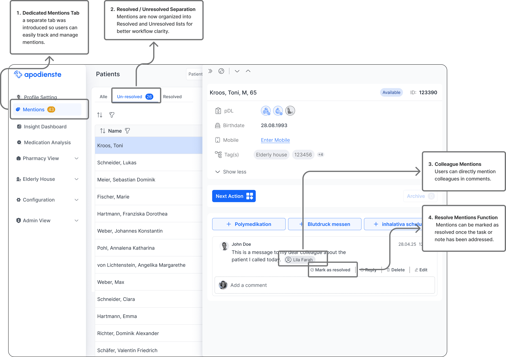
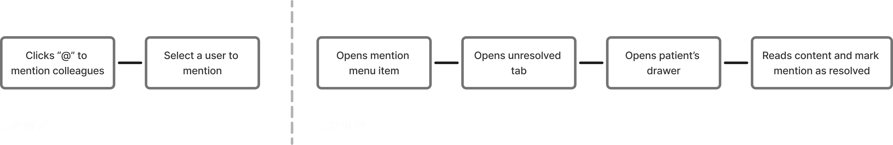
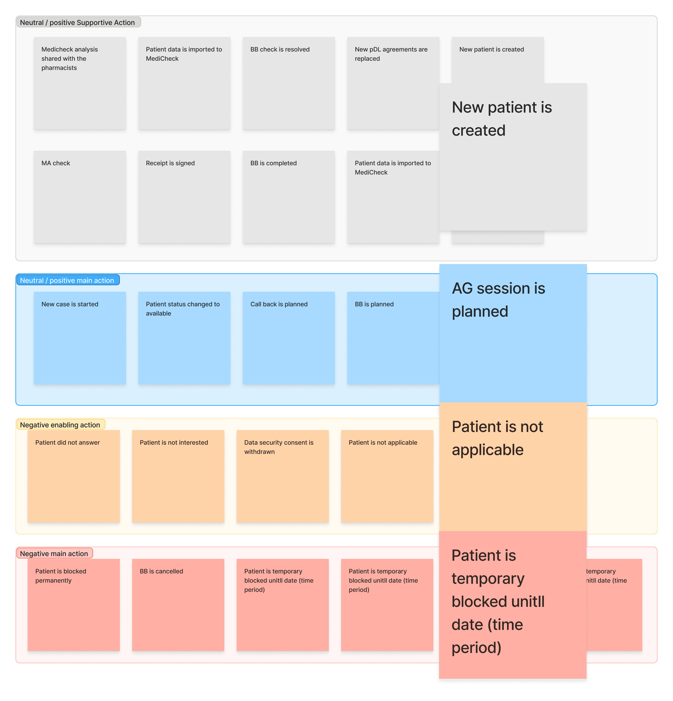

Overview
apodienste helps German pharmacies deliver services such as polymedication analysis, blood pressure measurement and inhalation training. Call-centre operators, analysts and pharmacists coordinate each patient across several calls, and all of that communication lived in one free-text comment box. Operators scrolled, copied and retyped notes to turn them into next steps, and context was lost between calls. Over three releases, we turned the comment thread into actions the system could track.
Results
-
30%
fewer missed cases after actionable mentions shipped
-
33%
less time on a core task (6 to 4 minutes to schedule an appointment and review a patient's history), measured through task analysis
-
25%
fewer clicks on the same task (12 to 9)
The problem
"How might we make teammate communication actionable, searchable and reliably documented across multi-call workflows, without increasing cognitive load or documentation overhead?"
"We have to use the comment section to track and record what has been done before for the patient, but it quickly becomes cluttered and hard to follow the important information."
Call-centre operatorOpportunity
The comment box was messy, but it already held a record of everything operators did for each patient. If that record could be turned into structured actions, the system could track work across calls, show what had happened last at a glance, and keep the documentation that audits require, without asking operators to write more.
Constraints
- Prescriptive input. Users and stakeholders often arrived with ready-made solutions. We had to look past them to the underlying needs and core pain points.
- A live product. Changes had to ship incrementally, without disrupting daily work.
- Easy to scan, and fit for audit. Tracking had to be quick to scan and easy to use day to day, while staying flexible enough for audit and compliance, including the legal retention of agreements and receipts.
- Different work speeds. Operators work quickly across many patients; pharmacists and analysts work in depth on fewer.
Act one: actionable mentions
What we saw
Session replays and interviews showed operators using the comment box for two jobs: talking to teammates and recording actions. Notes were short and fragmented, and important items got buried.
What we did
We introduced @mentions linked to people, cases and services, with a control to mark each one resolved. A dedicated Mentions tab separates resolved from unresolved items, so completed work leaves the stream.


Result
Shipped. Missed cases fell by 30%.
Act two: the action panel
What we saw
Microsoft Clarity recordings showed operators repeatedly switching between an action modal and the comment section to check what had happened last.
What we did
We ran Crazy 8s with development and product, then designed an action panel. It shows the latest case and patient actions alongside the current task, and lets operators trigger common actions without leaving it.
Building an action taxonomy
To design for actions rather than comments, we needed to know what the comments contained. We used Grok to run a thematic analysis of real comments, then reviewed its categories ourselves. We agreed with 86% of its grouping and corrected the rest. The result sorted every action by type (main actions change a patient's or case's state; supportive actions add context) and by outcome (neutral or positive, or negative).

Testing
Pre-launch usability tests showed users were enthusiastic, and helped separate high-frequency actions from rare or risky ones.
Result
Shipped, with the interface aligned around the new taxonomy.
Act three: guided action modals
What we saw
Switching between screens had dropped, but many operators still scrolled to the comments to leave or update notes during and after calls.
What we did
We mapped the exact actions operators take before and after a call. They matched the taxonomy from act two, so we could design for the actions directly. Guided action modals give clear primary actions (changing a case's status, scheduling an event, adding a service), confirmations and next-step prompts, and notify the people downstream. Every operational use of comments moved into a main action. Business-critical actions shipped first, and the rest followed.
Result
Fully shipped. In usability tests, operators found they no longer needed the comment section to complete their work. On the core task of scheduling an appointment and reviewing history, time fell from 6 to 4 minutes and clicks from 12 to 9.
What I learnt
- Design for the action, not the note. When the system captures what was done, context is recorded as a by-product, and wrap-up time falls.
- Treat existing behaviour as research. Real comments told us more about operators' work than any interview could, once we analysed them.
- Use AI for the first pass, not the final word. Grok made a large thematic analysis practical; reviewing its output ourselves is what made it trustworthy.